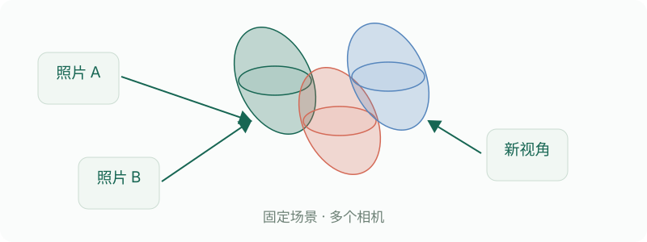
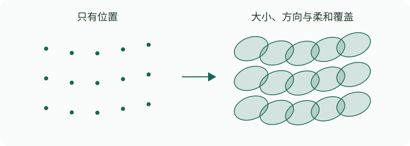
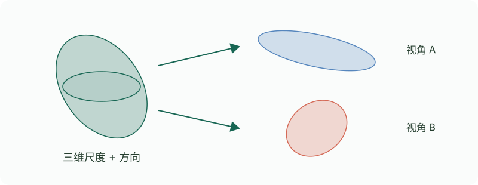
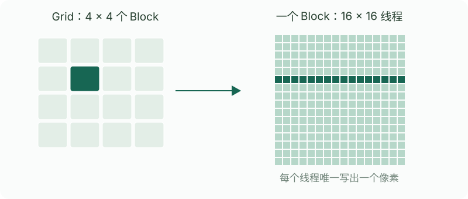
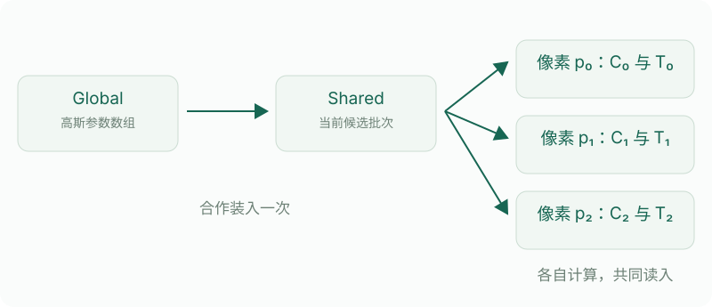
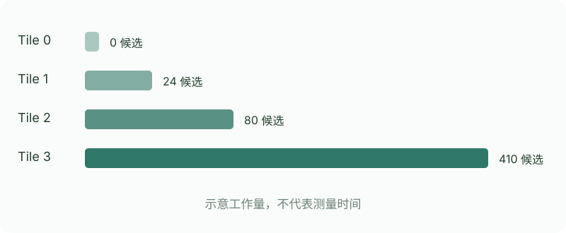
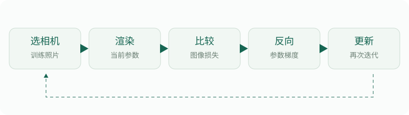

3D Gaussian Splatting：从三维表示到 GPU 并行渲染
沿着一帧图像，理解高斯表示、透明合成、工作分组与 CUDA 协作。
学完这一讲，你能
- 从高斯参数解释屏幕足迹与前后遮挡
- 用计数、Scan 与排序组织 Tile 候选
- 追踪 Block 内的装入、同步、合成与结束
- 从引用数、像素工作量与质量解释性能取舍
拍过的照片，怎样变成没有拍过的视角？
围着一个静态场景拍摄多张照片。现在移动一台虚拟相机，希望得到这个新位置应当看到的图像。这叫新视角合成。相机移动后，遮挡、物体的投影位置与外观都会改变。

3D Gaussian Splatting（3DGS）用一组可优化的三维高斯描述场景，再把它们投影、合成为图像。先到原论文项目页观察真实场景视频，再带着“每一帧如何算出来”回到本讲。
先分清两件事：学习场景与渲染场景
| 过程 | 输入 | 输出 / 操作 |
|---|---|---|
| 学习 / 训练 | 多视角照片、相机参数、初始点 | 反复渲染并与照片比较，更新高斯参数 |
| 渲染 / 推理 | 学好的高斯、一个目标相机 | 生成该相机的一帧图像 |
原始方法通常使用 SfM（运动恢复结构）提供相机位姿与稀疏点云。这里把它们作为已知输入；课堂不展开相机标定。
先讲清固定参数时的一次前向渲染，再回到如何训练。移动虚拟相机需要重新投影和组织屏幕上的工作，通常不需要重新训练整个场景。
沿一帧图像，串起前面学过的并行思想
| 已有知识 | 在本讲解决什么问题 |
|---|---|
| 第三讲：计数、前缀和、唯一地址 | 一个高斯对应多个 Tile，怎样并行写出可变数量的记录？ |
| 第五讲：线程索引与输出所有权 | 由哪个线程写一个像素？ |
| 第六讲：shared、同步与复用 | 相邻像素怎样共用一批高斯参数？ |
一个点的位置，还不足以覆盖一块表面

一个点只告诉我们“在哪里”。为它增加空间尺度与方向，就能描述一个有范围的局部贡献：中心附近强，离中心越远越弱。
图中的椭圆或椭球是等值线 / 等值面。高斯并不是边界坚硬的小球，也不是固定大小的方形像素。多个高斯可以重叠，共同描述同一片区域。
从一维开始：距离怎样改变贡献？
| 离中心的距离 | 0 | σ | 2σ | 3σ |
|---|---|---|---|---|
| 相对权重 | 1.000 | 0.607 | 0.135 | 0.011 |
μ 控制位置，σ > 0 控制宽度。相同距离下，σ 越大，衰减越慢。这里使用峰值为 1 的未归一化高斯核，后续还要乘上可学习的不透明度。
二维高斯：拉长、旋转，改变覆盖形状
调节两个尺度、角度和不透明度。图像按二维高斯公式计算；虚线为 2σ 等值线，图示不代表 GPU 性能。
两个方向尺度相同，等值线是圆；尺度不同，就是椭圆。旋转只改变方向，不改变两个主轴尺度。
Σ（协方差）把大小与方向放在同一个矩阵里。我们先用图理解它，再把同一思路搬到三维。
一个三维高斯，需要保存哪些参数？
| 参数 | 含义 | 影响图像的方式 |
|---|---|---|
| 中心 μ ∈ ℝ³ | 在场景中的位置 | 投影中心与深度 |
| 尺度 s ∈ ℝ³、旋转 q | 三个方向的大小与姿态 | 投影足迹的形状 |
| 不透明度 o | 贡献的强弱 | 局部 alpha 与遮挡 |
| 颜色参数 / SH 系数 | 随观察方向变化的外观 | 该相机下的 RGB |
这是一份显式参数表。渲染时反复读取它；训练时更新它。高斯数量也可以随训练改变。
把尺度与旋转组合成协方差
先沿局部坐标轴缩放，再旋转到世界坐标系。这里 s 是标准差尺度，因此协方差中出现 s²。R 来自归一化旋转四元数。
| 选择 | 结果 |
|---|---|
| sₓ = sᵧ = s_z | 各向同性；旋转不改变形状 |
| sₓ ≫ sᵧ ≈ s_z | 沿一个方向拉长 |
| 两个尺度大、一个尺度小 | 薄片状局部覆盖 |
正尺度配合有效旋转使协方差保持正定。优化时可用 exp 将无约束变量转换为正尺度。
不透明度与高斯权重，是两个不同的量
oᵢ 是这个高斯的参数；gᵢ(p) 随像素位置变化；αᵢ(p) 才是它在该像素上的局部 alpha。中心附近 α 较大，边缘较小。
| 假设 o = 0.8 | 中心 g=1 | 较远处 g=0.25 |
|---|---|---|
| 局部 alpha | 0.8 | 0.2 |
为什么颜色可以随观察方向变化？
同一位置从不同方向看，可能有不同亮度或高光。只保存固定 RGB 会限制这种外观的表达。原始 3DGS 用球谐函数（SH）的系数表达方向相关颜色。
d 是约定好的观察方向，Yₖ 是固定方向基函数，aₖ 是学习得到的系数。可以把它理解为“用几种已知的方向变化模式，组合出颜色”。
课堂先固定各高斯的 RGB，便于手算与追踪渲染；真实实现可在每高斯预处理阶段求该视角下的颜色。
先把中心变换到相机坐标系

世界坐标描述场景中的固定位置；相机坐标描述相对当前相机的位置。用 Z_c 表示沿相机前向的深度。相机动了，同一高斯的相机坐标与排序深度就可能改变。
透视投影：越远，屏幕位移越小
fₓ、fᵧ 是以像素计的焦距，(cₓ,cᵧ) 是主点。下例取 fₓ=fᵧ=100，主点 (32,32)，只比较位置：
| 相机坐标 (X,Y,Z) | 屏幕坐标 (u,v) |
|---|---|
| (0, 0, 2) | (32, 32) |
| (0.2, 0, 2) | (42, 32) |
| (0.2, 0, 4) | (37, 32) |
第二、三个中心的 X 相同，深度加倍后，偏离主点的距离减半。Z 接近零时除法不稳定，不能把所有输入都直接投影。
投影一个高斯，不能只投影中心

如果所有中心都画成固定半径的圆，就丢掉了三维尺度、旋转与透视变化。除了中心 μ₂D，还需要得到屏幕上的二维协方差 Σ₂D。
透视包含除法，是非线性映射。原始方法在高斯中心附近做局部线性近似，用这个小范围内的“变化率”来传播形状。
用局部变化率把三维形状带到屏幕
J 是 2×3 的投影雅可比矩阵：相机坐标改变一点，屏幕坐标改变多少。矩阵尺寸检查：2×3 · 3×3 · 3×2 → 2×2。
先记住数据流：三维协方差 → 相机方向下的协方差 → 屏幕二维协方差。课堂主线不要求手推每个偏导。
得到 Σ₂D 后，计算它的逆矩阵 Q，用于对每个候选像素求高斯权重。数值稳定与屏幕空间滤波还需要实现中的额外处理。
深入：透视雅可比的每一项从哪里来？
对 u=fₓX/Z+cₓ 分别求 X、Y、Z 的偏导，得到第一行；v 的偏导给出第二行。靠近主轴时 X、Y 较小，深度扰动对屏幕位置的横向影响较弱。
例如 X=Y=0，fₓ=fᵧ=f，三维各向同性 Σ=σ²I，则 Σ₂D=(fσ/Z)²I。深度加倍，屏幕标准差减半，协方差对角元变为四分之一。
无限的高斯，有限的候选区域
不能为一个高斯访问整张图像。实现用有限半径得到屏幕包围框，再裁剪到图像范围。基线代码根据二维协方差的最大特征值估计约 3σ 半径。
包围框负责快速找候选 Tile；真正合成时仍要按椭圆公式计算每个像素的 alpha，并跳过很小的贡献。框内不等于有效贡献，框外也不是数学上严格为零。
每高斯预处理：先做一次，供后面反复使用
| 输入 / 步骤 | 输出 |
|---|---|
| 中心与当前相机 | 可见性判断、屏幕中心、深度 |
| 尺度、旋转、相机 | 二维协方差与逆矩阵 |
| 方向与 SH 系数 | 当前视角颜色 |
| 屏幕足迹 | 包围框、候选 Tile 数 |
不同高斯的这些计算大体独立，可以按高斯并行。后续每个像素无需重新计算这个高斯的三维投影。不可见或没有候选 Tile 的高斯产生零条引用。
先算一个高斯在一个像素上的贡献
二维对称矩阵只需保存三个独立元素。交叉项带有系数 2；展开表达式时漏掉它，会改变旋转椭圆的形状。
先用一个像素与一个高斯理解“离中心有多远”，再讨论多个高斯怎样叠加。实现中的 alpha 上限和微小贡献阈值属于数值与质量折中。
前面的覆盖，决定后面还能贡献多少
C 是已累计颜色；T 是剩余透射率。最开始没有遮挡，T=1。每个高斯先用当前 T 加入颜色，再减少留给后方的比例。
追踪一个像素：红、绿、蓝怎样叠加？
教学算例直接给定该像素的局部 alpha：G₀=0.5、G₂=0.25、G₁=0.5。它们不是整幅图共享的常数。
黑色背景，从前向后为 G₀（红）→ G₂（绿）→ G₁（蓝）。逐步观察每个颜色分量和剩余 T。
交换深度顺序，为什么颜色变了？
| 两个高斯，局部 α 都是 0.5 | 红色分量 | 蓝色分量 | 剩余 T |
|---|---|---|---|
| 红在前、蓝在后 | 0.5 | 0.25 | 0.25 |
| 蓝在前、红在后 | 0.25 | 0.5 | 0.25 |
剩余透射率相同，但颜色不同。普通颜色相加可以交换次序；有遮挡的 alpha 合成不能随意交换前后次序。
把像素合成写成一段短循环
// 教学伪代码：list 已按前到后排序；无阈值近似
Color C = {0, 0, 0};
float T = 1;
for (int id : list) {
float alpha = opacity[id] * gaussian_weight(id, pixel);
C += T * alpha * color[id];
T *= 1 - alpha;
}
image[pixel] = C + T * background;不同像素可以同时执行自己的循环；同一像素在这个实现中沿排序列表依次更新 C 与 T。输入已经排序是这段代码的前提。
随堂填空 ①：只补两行，保持前后关系
约 2 分钟。初始 C=0、T=1；红色 α=0.5 在前，蓝色 α=0.5 在后，黑色背景。
for (Gaussian g : front_to_back) {
float a = alpha_at(g, pixel);
C += __________;
T = __________;
}补全表达式，并给出最终 RGB 与 T。若先更新 T 再计算 C，会发生什么？
查看参考答案
C += T * a * g.color;，T = T * (1-a);。结果 RGB=(0.5,0,0.25)，T=0.25。先更新 T 会把当前高斯也当成其自身前方的遮挡，低估本次贡献。
深入：像素内的合成能否使用 Scan？
把相邻、已保持深度顺序的片段表示为“局部颜色 + 透射率”，这个组合在精确算术下具有结合性，因此存在树形归约或扫描的可能。它不具有交换性，不能改变前后顺序。
基线 Tile 渲染器选择每像素顺序遍历：像素间已有大量并行，还能自然利用提前结束。额外的像素内并行会带来中间状态、通信和调度成本。浮点运算重新分组也可能改变舍入。
最直接的方法，为什么会做太多无用工作？
parallel_for pixel in image:
for gaussian in all_gaussians_in_depth_order:
evaluate_and_blend(pixel, gaussian)设有 P 个像素、N 个高斯，最直接的候选检查量为 P×N。1920×1080 像素与 100 万个高斯，对应约 2.07×10¹² 对组合；其中很多在屏幕上相距很远。
选择输出所有者：每个像素交给一个线程
| 方案 | 方便之处 | 还需要解决 |
|---|---|---|
| 按高斯散射到像素 | 直接遍历自己的覆盖范围 | 多个高斯写同一像素，还要满足深度顺序 |
| 按像素聚集高斯 | 一个线程持有 C、T，唯一写出像素 | 怎样快速得到这个像素的候选列表？ |
基线选择后者。若为每个像素建立独立列表，管理与存储可能很贵。相邻像素的候选通常相似，于是让一小块屏幕共用一个列表。
把屏幕分成 Tile，共用一份候选列表
64×64 教学屏幕，16×16 像素一个 Tile，共 4×4 个 Tile。点击或用键盘选择 Tile，查看候选及深度顺序。虚线框是候选包围框。
同一 Tile 的像素遍历相同的高斯 ID 列表，但各自计算到高斯中心的距离、alpha 和颜色。列表相同不代表每个像素都有相同贡献。
贯穿算例：四个高斯产生多少条引用？
| 高斯 / 颜色 | 中心 (u,v) | 候选半径 r | 深度 z | 覆盖的 Tile ID |
|---|---|---|---|---|
| G₀ / 红 | (20,20) | 8 | 2 | 0, 1, 4, 5 |
| G₁ / 蓝 | (26,12) | 6 | 4 | 1, 5 |
| G₂ / 绿 | (30,26) | 10 | 3 | 5, 6, 9, 10 |
| G₃ / 黄 | (54,54) | 4 | 5 | 15 |
Tile ID = tile_y×4 + tile_x，左上角为 0。这里用半开包围框 [u−r,u+r)×[v−r,v+r)，求重叠 Tile，并裁剪到屏幕。
这是明确约定的教学边界规则；真实渲染器的像素取样与边界取整须以源码为准。后续步骤始终使用这张表。
数量不一样，先用前缀和分配写出位置
| 高斯 | 写出区间（左闭右开） |
|---|---|
| G₀ | [0,4) |
| G₁ | [4,6) |
| G₂ | [6,10) |
| G₃ | [10,11) |
offset 是独占前缀和，每个高斯提前知道自己专属的输出区域。即使 G₂ 最早执行，也只写 [6,10)，不会抢占 G₀ 的位置。
原代码使用包含式扫描，再读取前一项得到起点；与这里直接计算独占前缀和的教学表示等价。
随堂填空 ②：给每个高斯一段独占空间
约 2 分钟。换一组覆盖数量 count=[2,0,3,1]，含一个不可见高斯。
offset = [0, __, __, __]
total = __
parallel_for g in gaussians:
for j in range(count[g]):
output[__________] = pair(g, its_tiles[g][j])哪两个高斯可以具有相同的 offset？为什么不会产生写冲突？
查看参考答案
offset=[0,2,2,5]，total=6，写入地址为 offset[g]+j。G₁ 和 G₂ 起点同为 2，但 G₁ 的数量为零，不执行写入；G₂ 写 [2,5)。
并行写出：从每高斯列表变成一串记录
| 输出位置 | 高斯 | (Tile, depth) |
|---|---|---|
| 0–3 | G₀ | (0,2), (1,2), (4,2), (5,2) |
| 4–5 | G₁ | (1,4), (5,4) |
| 6–9 | G₂ | (5,3), (6,3), (9,3), (10,3) |
| 10 | G₃ | (15,5) |
现在记录按“从哪个高斯写出”放在一起。渲染时需要的却是“同一个 Tile 有哪些高斯，而且前后顺序是什么”。接下来必须重新组织顺序。
一次排序，先按 Tile，再按深度
| Tile | 排序后高斯 ID | 对应深度 |
|---|---|---|
| 0 | G₀ | 2 |
| 1 | G₀, G₁ | 2,4 |
| 4 | G₀ | 2 |
| 5 | G₀, G₂, G₁ | 2,3,4 |
| 6 | G₂ | 3 |
| 9 | G₂ | 3 |
| 10 | G₂ | 3 |
| 15 | G₃ | 5 |
把 Tile ID 放在主关键字，把相机空间深度放在次关键字；GPU 排序将相同 Tile 的记录聚集起来，并在组内按前到后排列。
Tile 5 最能说明问题：写出时 G₁ 在 G₂ 前，排序后 G₂ 必须移到 G₁ 前。
找到每个 Tile 的起止位置，交给渲染器
| Tile | 范围 [begin,end) | 列表长度 |
|---|---|---|
| 0 | [0,1) | 1 |
| 1 | [1,3) | 2 |
| 4 | [3,4) | 1 |
| 5 | [4,7) | 3 |
| 15 | [10,11) | 1 |
比较相邻排序记录的 Tile ID，边界处写出范围。没有记录的 Tile 保持空范围，渲染时输出背景。
深入：64 位排序 Key 包含什么？
Tile ID 占高位，深度编码占低位。基线把通过可见性检查的正有限浮点深度按位解释为无符号整数；在这个范围内，位模式顺序与数值顺序一致。
不能直接把相同做法用于任意带负号浮点数、NaN 或不一致的深度约定。位打包不是把深度数值强制转换成整数。
Radix sort 的内部并行原理不在本讲展开；我们关注输入记录数、键和值的大小、临时缓冲区及其整体成本。
一个 Tile 一个 Block，一个像素一个线程

// 本讲采用 x 对应列、y 对应行
int x = blockIdx.x * 16 + threadIdx.x;
int y = blockIdx.y * 16 + threadIdx.y;
bool inside = x < width && y < height;每个线程在寄存器中维护自己的 C 与 T，最后写出自己的像素。不要把一个 Block 等同于一个 SM：Block 由硬件调度，多个 Block 可在资源允许时驻留于同一 SM。
同一份高斯参数，让整个 Block 共用

设一批 B 个候选，Tile 有 256 个像素。若每个像素独立重复获取参数，会产生很多重复读取请求。合作加载后，多个像素从 shared 读取同一批屏幕中心、形状与不透明度。
本讲伪代码把 RGB 也放入 shared 以便展示。官方基线对部分几何参数使用 shared，颜色访问方式应具体看源码。
一块 Shared，分批复用：两道交接不能少

装入后同步：确保其他线程写的数据可以读取。覆盖前同步：确保旧数据已被所有仍需读取的线程使用完。
第二道同步可以与下一轮开始处的集体操作合并，但不能凭空消失。同步必须沿一致的 Block 控制流执行。
把分工、复用与顺序放进同一个循环
// 教学伪代码；所有线程执行外层循环和 barrier
bool done = !inside;
C = 0; T = 1;
for (batch in tile_sorted_list) {
if (block_all(done)) break; // 全块投票，统一退出
load_batch_cooperatively(shared, batch); // done 线程也参加
block_barrier();
if (!done) {
for (g in valid_entries(shared)) {
a = alpha_at(g, pixel);
C += T * a * g.color;
T *= (1 - a);
if (T < epsilon) { done = true; break; }
}
}
block_barrier(); // 等大家读完，才可覆盖 shared
}
if (inside) image[pixel] = C + T * background;这里在纳入当前项后检查 T，省略 alpha 裁剪与微小贡献跳过，目的是突出并行结构；它不是官方 kernel 的逐行复制，也不保证逐位相同的结果。
像素结束，不等于线程可以提前 return
| 状态 | 是否继续合成 | 是否参与加载 / 同步 |
|---|---|---|
| 有效像素，T 仍大 | 是 | 是 |
| 有效像素，T 已很小 | 否 | 是，直到全块统一结束 |
| 边缘 Tile 的越界线程 | 否 | 是，可能负责其他像素所需的数据 |
线程既是“一个像素的计算者”，又是“一个 Block 的搬运参与者”。前一个角色完成，并不代表后一个角色可以消失。
随堂填空 ③：把同步放在所有参与者都会经过的位置
约 3 分钟。假设下面每一轮都要复用同一个 shared 缓冲区。补出两处操作，并说明是否允许 if (done) return;。
for (batch in batches) {
load_batch_cooperatively(shared, batch);
__________; // 开始读之前
if (!done) blend_pixel(shared);
__________; // 下一轮覆盖之前
}查看参考答案
两处都需要 Block 级 barrier（CUDA 中可用 __syncthreads()），并放在 if (!done) 外。这里不能让 done 线程自行 return：它还可能承担后续批次的加载，其他线程也依赖一致的协作协议。统一的全块退出需另行设计。
相同的线程数，不代表相同的工作量

空背景 Tile 很快结束，复杂边缘可能覆盖很多高斯。即使同一 Tile 内，一些像素早已不透明，另一些仍在处理后方内容。
Warp 内的分支让部分 lane 不再做合成，但这些线程仍可能参加加载和同步。整块何时结束，还取决于未完成的像素。
回到源码：我们现在能读懂哪几段？
| 逻辑阶段 | 官方入口 / 关键名字 | 阅读时追踪的状态 |
|---|---|---|
| 每高斯预处理 | forward.cu / preprocessCUDA | 屏幕中心、conic、radii、tiles_touched |
| 前缀和与分组 | rasterizer_impl.cu / forward | point_offsets、duplicateWithKeys、SortPairs |
| 分段 | identifyTileRanges | ranges[tile] |
| 每 Tile 渲染 | forward.cu / renderCUDA | point_list、shared、T、C、done |
先沿“输入 → 输出数组 → 下一阶段读取者”看调用链，再进入每行索引。网页示例是独立的教学简化；官方 main 分支会变化，复现实验应记录所用提交版本。
深入：提前结束，牺牲了多少颜色贡献？
如果颜色与背景的每个通道都位于 [0,1]，当前剩余透射率为 T，那么后方所有内容对最终颜色的总权重不超过 T。用背景替代后方内容时，每通道误差上界可由 T 控制。
这个推理只解释截断当前像素的尾部；它不包含排序近似、滤波、低 alpha 跳过或训练变化。HDR 或未裁剪颜色也需要不同的颜色上界。
深入：教学循环与官方阈值次序有什么差别？
官方基线会对 alpha 设上限、跳过极小 alpha，并先计算候选 test_T。若它低于终止阈值，会标记 done 而不把该候选加入 C，也不把 test_T 写回 T。
主线的伪代码选择“先合成，再检查 T”方便解释。二者共享线程协作结构，但阈值附近的数值行为不同。若做结果校验，应明确选择哪个规范，不能要求简化版本逐位等同官方实现。
渲染器怎样成为一个可学习的模型？

原始方法组合像素 L₁ 损失与结构相似性项。可先把 L 理解为“当前渲染与训练照片的差异”。选一个训练相机，计算一次损失，再把梯度传回高斯。
要评估新视角能力，应另外使用未参加训练的相机图像；记住训练照片不等于学会所有新视角。
像素误差，沿哪条链回到高斯参数？
颜色不对，可调整颜色系数；覆盖位置不对，可调整中心；足迹不合适，可调整尺度与旋转；遮挡强弱不对，可调整不透明度。它们通常共同影响损失，并非各自负责一种独立错误。
反向计算复用前向的排序与 Tile 范围。渲染器并不对排序位置、整数 Tile 归属、增删高斯等离散决定做普通连续求导。
前向一个像素一个所有者，反向却会汇到同一高斯

一个高斯覆盖多个像素甚至多个 Tile。每个像素算出的梯度都是总梯度的一部分，需要归约到同一个高斯参数上。
基线反向 kernel 使用原子加来汇集一些参数梯度。这里的相加具有归约意义，与前向不允许乱序的透明颜色合成是不同问题。浮点归约次序仍可能影响末位舍入。
只有移动参数还不够：还要增加、拆分与删除

如果某一区域的表示不足，仅微调现有高斯可能不够。原始方法结合视空间位置梯度统计与尺度，决定哪些高斯适合克隆或拆分，并移除不透明度过低等不需要的基元。
这些是周期性的自适应密度控制操作，不是在每次普通梯度更新中把数组长度连续地“求导出来”。
训练完成，查看一帧时哪些东西还在变化？
| 保持不变（固定场景推理） | 随目标相机重新计算 |
|---|---|
| 中心、尺度、旋转、不透明度、SH 系数 | 相机坐标、屏幕中心与足迹 |
| 高斯参数集合 | 视角相关颜色、可见性 |
| 无需计算训练损失或反向梯度 | Tile 覆盖、排序、像素合成 |
一份场景参数可以从多个相机位置渲染。相机运动后，前一帧的候选与深度关系不一定适用；本讲基线为新相机重新走前向流程。
深入：为什么不保存每个像素的完整历史？
如果为每个像素保存所有贡献高斯与每一步 T，内存会随重叠深度增长。基线保存最终透射率、最后贡献位置等状态，反向重新遍历有序候选列表。
反向从后向前恢复需要的系数，同时复用前向列表和批量加载。必须与前向的跳过、终止和 alpha 裁剪规则匹配。
不要只数高斯：三个规模决定不同阶段
| 规模 | 定义 | 主要影响 |
|---|---|---|
| N | 高斯数量 | 预处理、参数存储 |
| M = Σᵢ nᵢ | Gaussian–Tile 引用数量 | 写出、排序、范围与缓冲区 |
| K = Σₚ kₚ | 所有像素实际检查的候选总数 | 像素遍历与合成 |
同样 N 个高斯，屏幕足迹更大时 M 可能更多；覆盖重叠更深、较晚达到不透明时 K 可能更大。改变相机也会改变这些量。
Tile 越小一定越快吗？
| 改变 Tile 大小 | 可能得到什么 | 可能付出什么 |
|---|---|---|
| 较小 Tile | 候选更精细，减少无关像素检查 | 引用 M 增加、Block 数与组织成本增加 |
| 较大 Tile | 更多像素共用候选，可能减少引用 | 无效候选检查更多，块内差异与资源需求变化 |
一个高斯覆盖范围固定时，用更细的 Tile 划分，往往会产生更多引用；但列表对每个像素更有针对性。效果还取决于场景、屏幕分辨率与 kernel 设计。
怎样设计一组能回答问题的性能实验？
| 控制项 | 记录项 | 比较目的 |
|---|---|---|
| 固定场景、相机、分辨率与阈值 | N、M、K 或候选分布；各阶段时间 | 定位成本落在哪里 |
| 只改变相机距离 | 足迹大小、引用数、帧时间 | 检验“点数相同，工作是否相同” |
| 只改变提前结束阈值 | 帧时间、图像误差 | 量化质量与速度折中 |
预热后测多帧，记录 GPU、实现版本与计时范围，区分渲染 kernel 时间和完整帧时间。GPU 事件用于相关设备区间；跨 CPU / GPU 的完整时间还需要保证完成后再读时钟。
哪些近似与限制，会在图像中暴露？
| 条件 | 需要注意的现象 |
|---|---|
| 大足迹或复杂遮挡 | 共享中心深度排序与局部投影近似可能失准 |
| 训练视角覆盖不足 | 未观察区域的几何或外观可能不可靠 |
| 分辨率与观察距离改变 | 屏幕空间采样、滤波与细节可能变化 |
| 透明 / 反射外观复杂 | 拟合的外观不等于恢复了完整物理材质 |
本讲讲的是原始 3DGS 思路及其基线并行结构。后续研究可以改进排序、抗锯齿、压缩与训练，但应先弄清改动解决的是哪一种误差或成本。
把整帧放回一起：表示、组织与执行
| 应该能够解释 | 关键回答 |
|---|---|
| 图像怎样形成？ | 投影足迹、局部 alpha、按深度合成 |
| 为什么需要前缀和与排序？ | 可变数量的唯一写址、Tile 分组与前后顺序 |
| GPU 怎样协作？ | 一 Tile 一 Block，像素私有 C/T，批量 shared 复用 |
| 为什么有时不快？ | 引用膨胀、冗余检查、长尾、同步与组织成本 |
深入：估算参数与引用缓冲区
以一个教学布局估算：位置 3、尺度 3、四元数 4、不透明度 1、三阶 SH 的 RGB 系数 48，共 59 个 FP32，约 236 字节 / 高斯。100 万个高斯约 236 MB（十进制），不含对齐、梯度和优化器状态。
排序通常还需要输入 / 输出缓冲与临时工作区，不能把 12M 字节当作整个排序过程的峰值。训练还需要梯度、优化器状态、前向中间量等。
深入：从原始论文到实现的阅读顺序
| 想核对什么 | 优先阅读 |
|---|---|
| 场景表示与投影 | 论文 §4；forward.cu 的协方差与投影计算 |
| 优化与密度控制 | 论文 §5；train.py、gaussian_model.py |
| 排序与 Tile 并行 | 论文 §6 / 附录 C；rasterizer_impl.cu |
| 像素遍历与反向状态 | forward.cu / backward.cu |
本讲图解与小型算例为课程原创。方法归属 Kerbl、Kopanas、Leimkühler 与 Drettakis（2023）。论文 HTML 标注 CC BY 4.0；官方代码具有自己的许可条款，本讲未复制或重新分发其实现。
本页链接指向原论文与官方项目。复现时记录提交号、运行配置、场景、相机和阈值；不要把不同版本的性能数字直接混在一起。